A private audio journal for iPhone and iPad
Your year,
in your own words.
Speak, and Life Wrapped turns your days into summaries and a year in review. Transcription happens on your iPhone or iPad, and your audio never leaves it.

In the app
See it in action
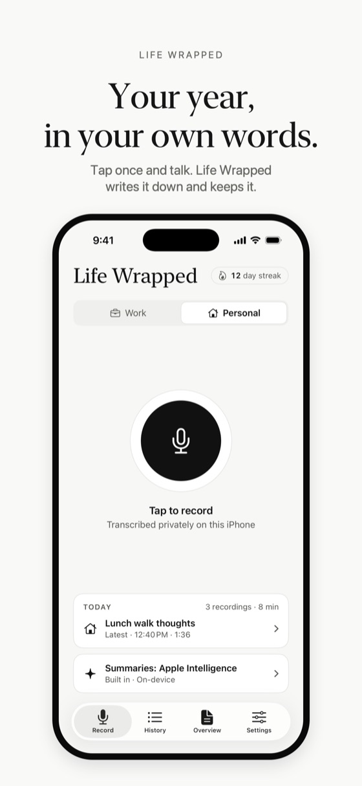
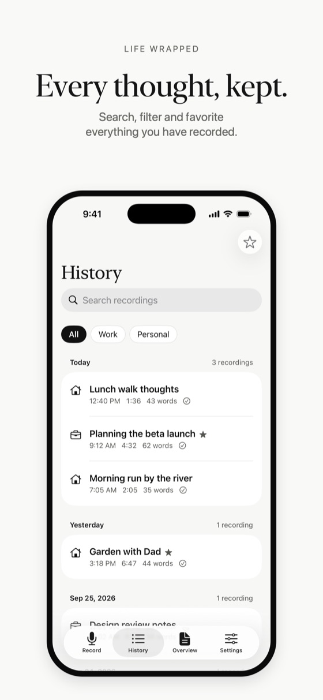
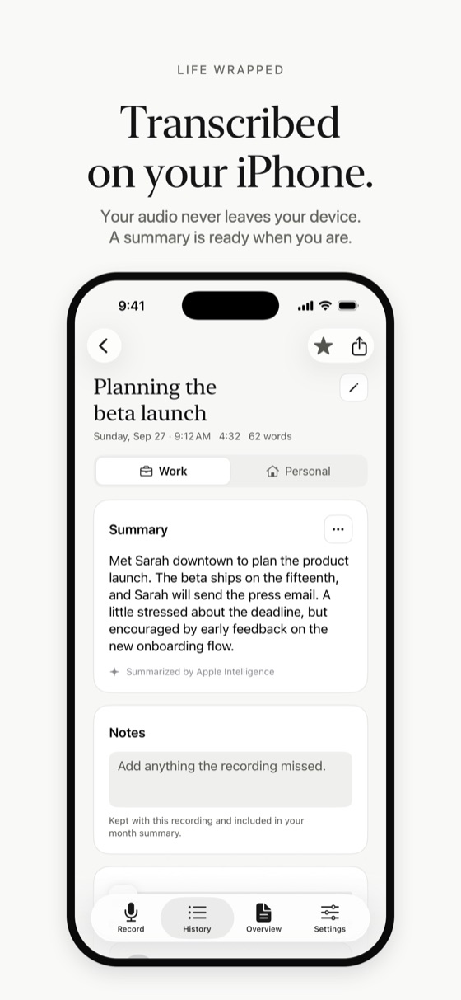
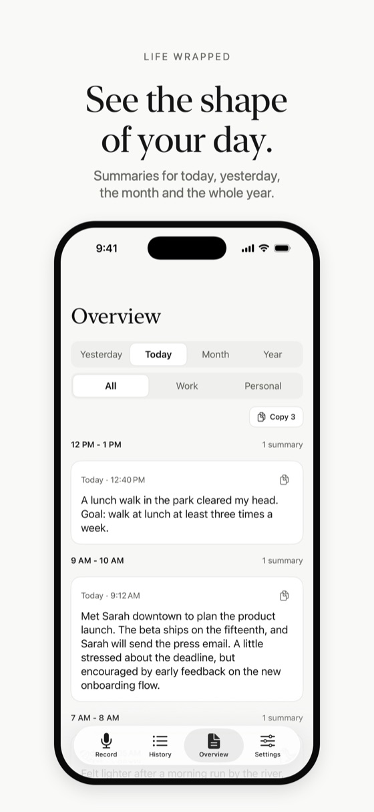
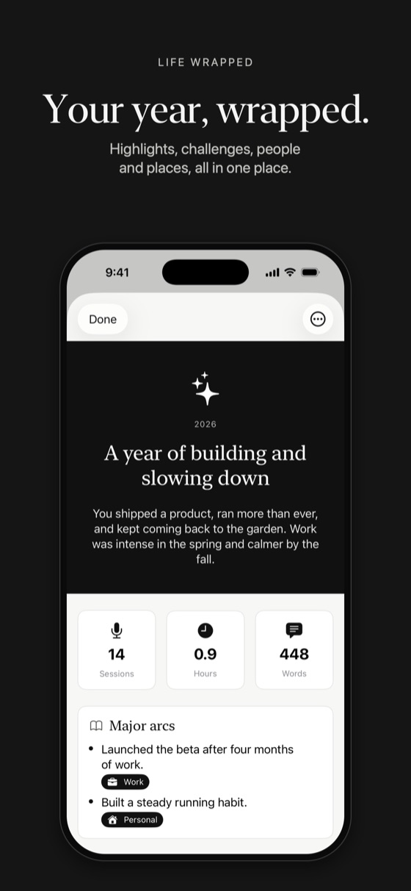
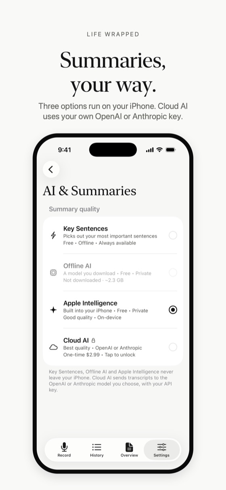
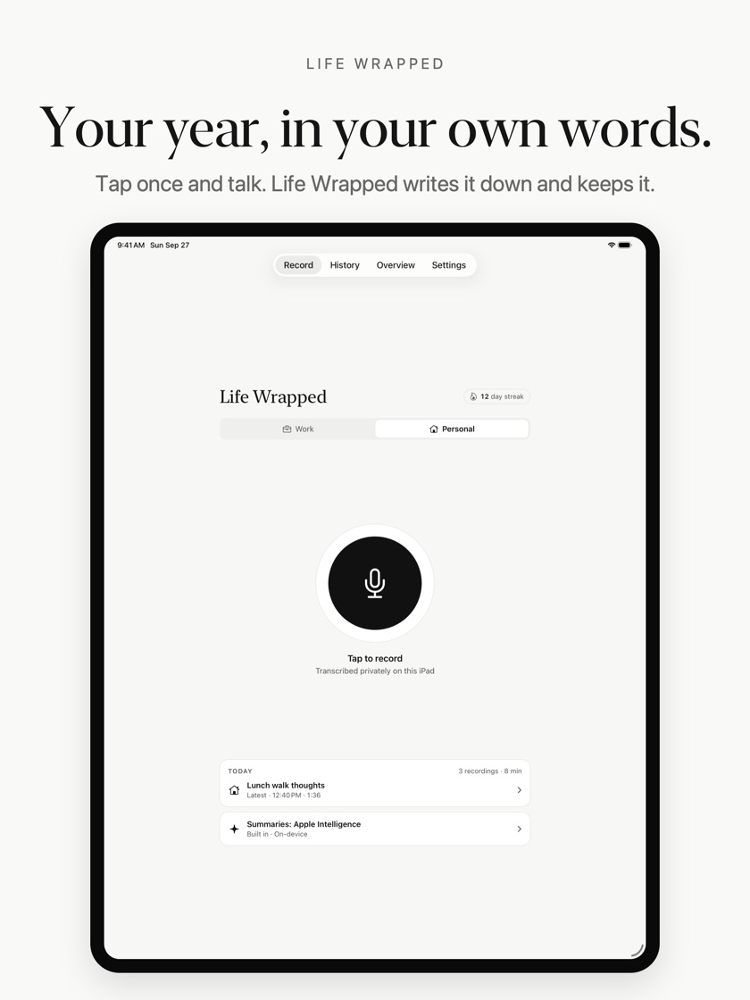
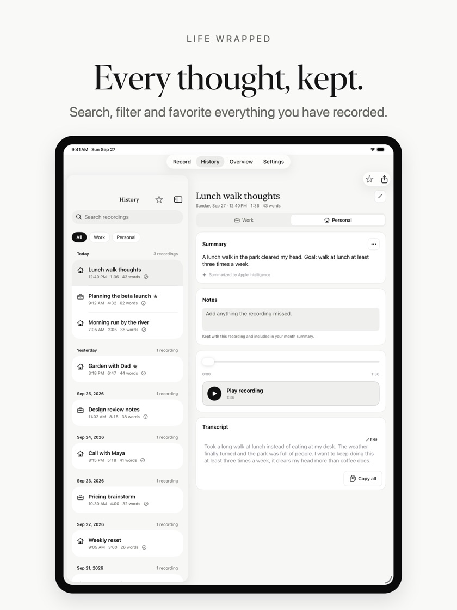
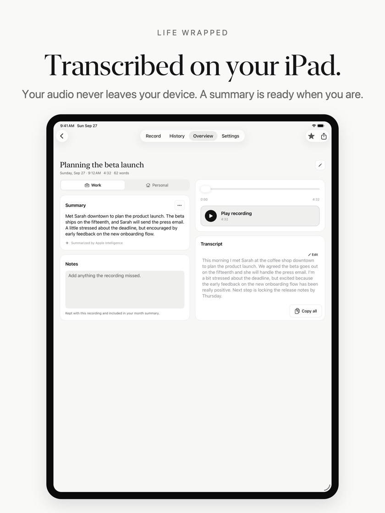
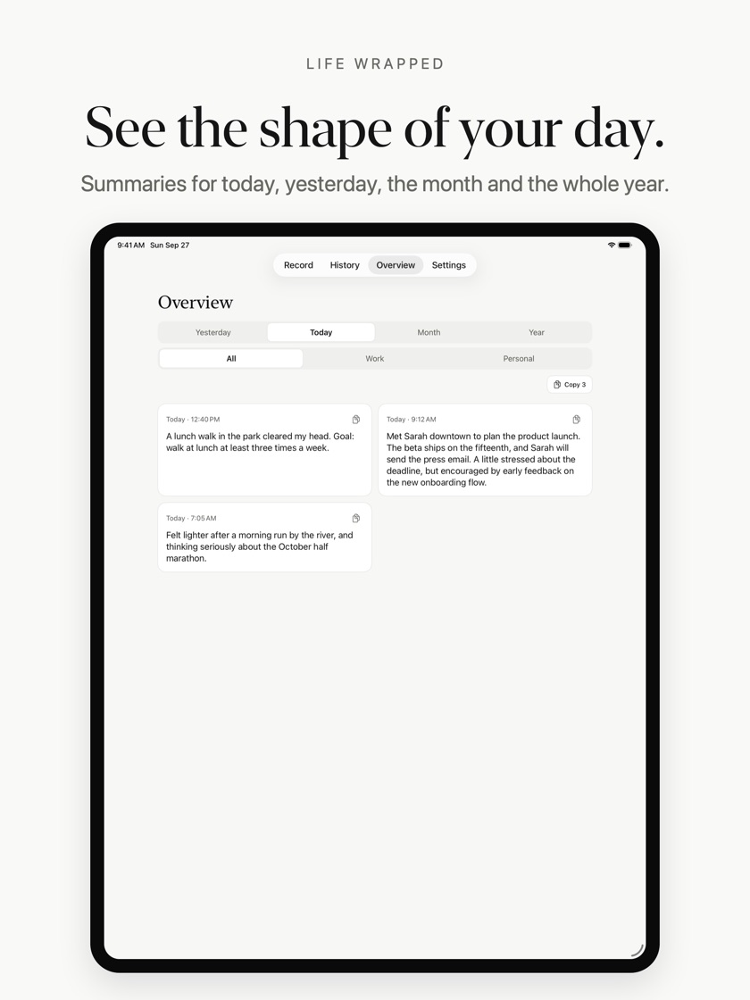
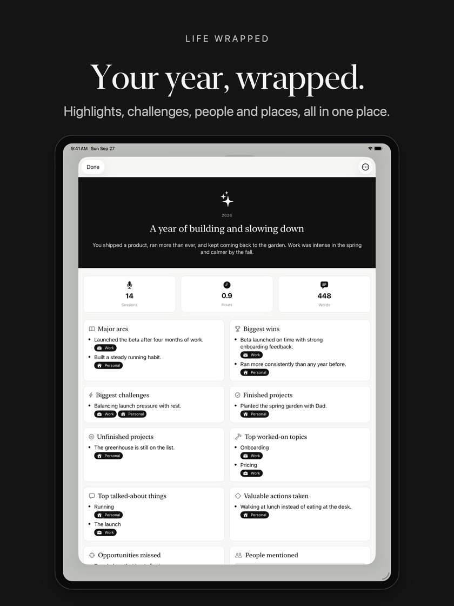
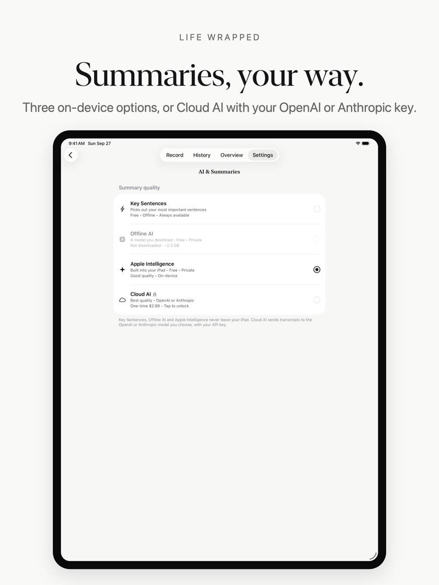
What it does
Talk through your day
Record a thought, a meeting or a walk home. Life Wrapped keeps it, writes it down and helps you see the shape of your year.
Record in one tap
Pick Work or Personal and tap once. Long entries are split into short parts automatically, so they transcribe quickly.
Transcribed on your device
Apple's Speech framework, set to on-device recognition only. Your audio is never uploaded. Fix any part of a transcript and add your own notes.
Summaries your way
Key Sentences, Offline AI and Apple Intelligence run on your device. Cloud AI uses the OpenAI or Anthropic model you choose, with your own key, for a one-time $2.99.
Your days and months
Every recording gets a title and a summary. Overview shows today and yesterday, and writes a summary of each month, for work, personal or both.
Year Wrap
Your year in review: wins, challenges, projects, people, places and the topics you kept coming back to. Made with Apple Intelligence or Cloud AI.
Find anything
Search titles, notes and transcripts, filter by Work or Personal, and star the recordings you want to keep close.
Patterns over time
Your streak, your longest recording, when you record most and the words you use most.
Widgets
Start a Work or Personal recording from your Home Screen or Lock Screen, and see today's count and your streak.
Export anytime
Take your transcripts and summaries with you as JSON, Markdown or PDF, or delete everything whenever you want.
Privacy
Private by design
No account, no analytics, no tracking. Your journal lives on your iPhone or iPad.
Stays on your device
Audio, transcripts, notes and summaries are stored on your device and never sent to us.
No data collection
No analytics SDKs, crash reporters, ads or tracking of any kind.
Cloud only if you choose
Text leaves your device only when you choose Cloud AI, and only goes to the provider you connect. Audio never does.
Documentation